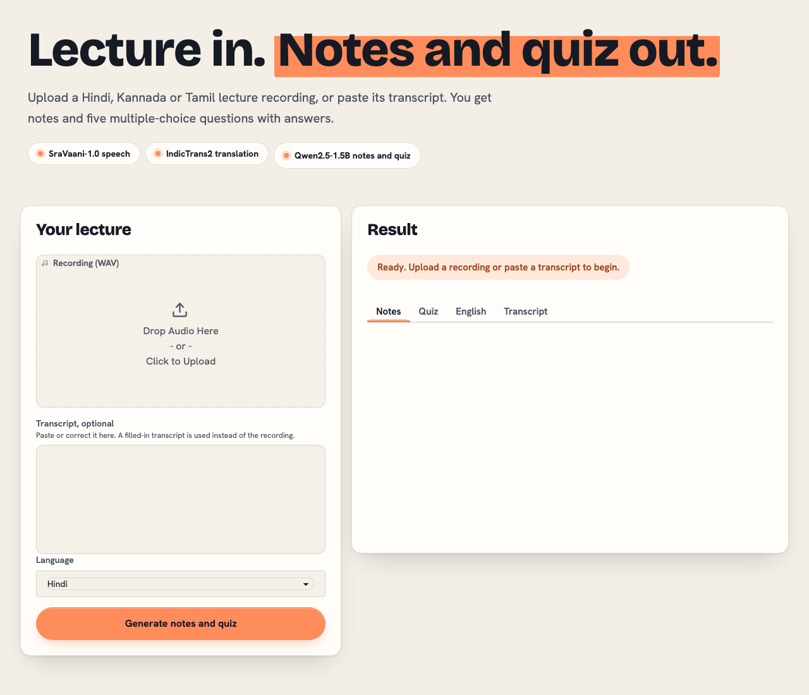

Lecture in. Notes and quiz out.
A Hindi lecture recording goes in. Notes and five multiple-choice questions come out, with the transcript and English translation shown at each step. CS3235 mini project, built with open AI4Bharat and Indic models.
- SraVaani-1.0 speech
- IndicTrans2 translation
- Qwen2.5-1.5B notes and quiz
The live app does not run on this page. GitHub Pages serves static files only, and the app loads about 8 GB of models.
Run the app on a Mac with the setup steps in the README, or read the saved run and results below.
At a glance
10
synthetic Hindi lectures
50
quiz questions, all lectures valid
7.0%
average speech word error rate
38 / 50
answers marked correct (AI reviewer)
The app

Results
| Lecture | Topic | Word error rate | Character error rate | Quiz retries |
|---|---|---|---|---|
| 01 | Newton's laws | 7.1% | 2.2% | 1 |
| 02 | Photosynthesis | 2.4% | 0.7% | 1 |
| 03 | Water cycle | 1.4% | 0.3% | 0 |
| 04 | Indian Constitution | 2.9% | 1.1% | 0 |
| 05 | Human heart | 10.4% | 3.2% | 1 |
| 06 | Computer functions | 6.8% | 2.2% | 1 |
| 07 | Earth's layers | 15.9% | 4.2% | 1 |
| 08 | Blood components | 16.4% | 5.7% | 1 |
| 09 | Solar system | 5.3% | 2.6% | 0 |
| 10 | Energy conservation | 1.3% | 0.3% | 0 |
| Average | 7.0% | 2.2% | 6 of 10 lectures |
Quiz review: 38 of 50 answers marked correct and 38 of 50 supported by the lecture text, by one AI reviewer. No person has checked these labels yet.
Read more
Run it locally
python3.11 -m venv .venv .venv/bin/python -m pip install -r requirements.txt python3.11 -m venv .venv-translate .venv-translate/bin/python -m pip install -r requirements-translate.txt sh scripts/fetch_sravaani.sh .venv/bin/python app.py
Requires macOS on Apple Silicon. IndicTrans2 is gated on Hugging Face: accept its terms, then log in with hf auth login. The full setup is in the README.